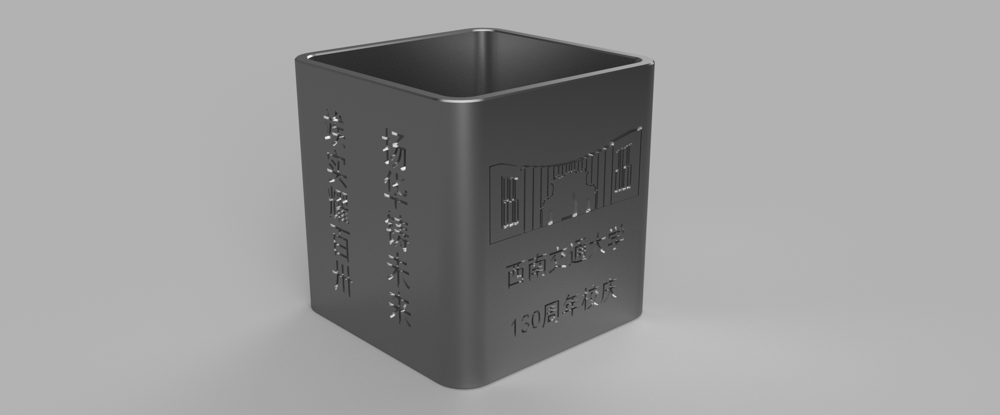
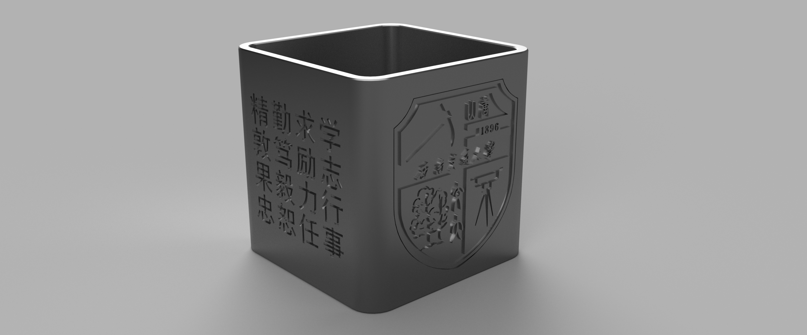
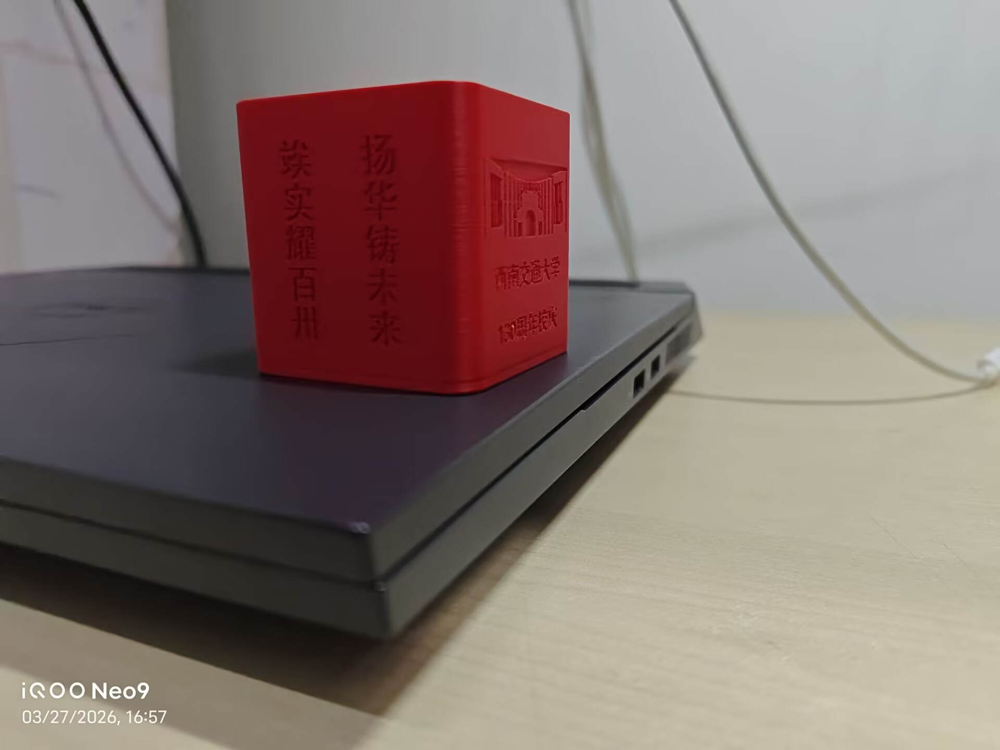
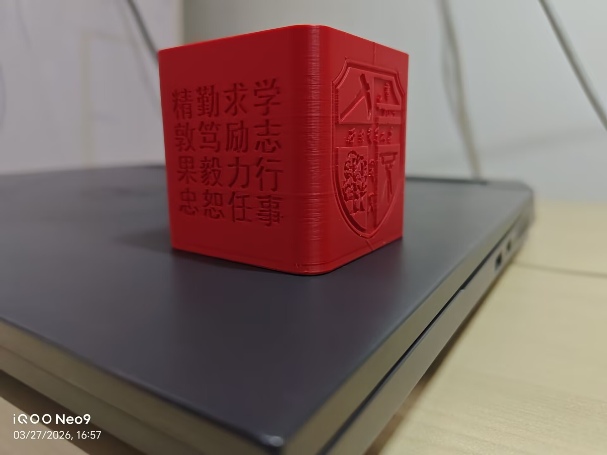

学习使用Bambu Studio进行3D打印切片处理，结合校庆主题完成文创产品的设计、参数调试与实物打印全流程。
本次学习内容：
- Bambu Studio 软件界面认知与基础配置
- 校庆文创3D模型导入、尺寸校准与摆放
- 打印参数优化：层高、填充率、支撑策略设置
- 耗材选择（PLA/ABS）与温度参数匹配
- 切片文件（G-code）生成与打印机联机传输
- 打印过程监控与常见故障排查
- 打印后处理：去支撑、打磨、上色等工艺
学习使用Bambu Studio进行3D打印切片处理，结合校庆主题完成文创产品的设计、参数调试与实物打印全流程。
本次学习内容：


校庆文创产品（笔筒）的3D模型最终渲染效果。


完成打印与后处理后的校庆文创实物（笔筒）成品展示。
包含可直接用于Bambu Studio打印的模型源文件。